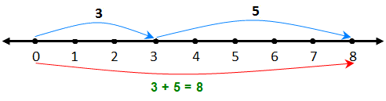

Doğal Sayılarda Toplama İşlemi; İki veya daha çok sayının alt alta veya yan yana yazılarak toplanmasına toplama işlemi denir. Toplama işlemi, ileriye doğru saymanın kısa yoldan yapılışıdır.
ÖRNEK:Bir sayı doğrusunda sıfırdan başlamak üzere sekize kadar sayılar olsun. O zaman bu sayı doğrusu içerisinde 3 ile 5'i toplarsak ne olur?
CEVAP: Öncelikle sayı doğrusu üzerinde sıfır rakamını buluruz. Daha sonra 0 rakamı üzerinden 3 rakamına doğru hareket ederiz. 3 rakamını bulduktan sonra ise 5 tane rakam sayarız. Yani böylece 3’ten sonra 5 daha sayınca sayı doğrusu üzerinde 8'e ulaşırız.
Bir doğal sayı ile sıfırın toplamı, o doğal sayının kendisine eşittir.
6 + 0 = 6
Toplama işlemi: Toplama işlemi toplanan ve toplayan sayıların bir araya gelmesi ile yapılır. Böylece sayılar birbiri üzerine eklenir ve toplam sayı bulunur.
8 + 5 = 13
Toplayan -> 8
Toplanan -> 5
Toplam sayı -> 13
Şimdi de verilmeyen toplananı bulalım ve bunun nasıl yapıldığını öğrenelim.
ÖRNEK:Benim 3 tane boya kalemim bulunmaktadır. Kardeşim ile benim boya kalemlerimin toplamı 8'dur. O zaman benim ile kardeşimin toplam boya kalemleri kaçtır?
4 + ... = 9
CEVAP:Yukarıda gördüğümüz gibi kardeşimin boya kalemlerinin sayısı bulunmuyor. O zaman burada dördü hangi sayıyı eklersek sonuç 9 çıkar? Dörtten sonra parmağımızla 9'a kadar sayalım. Bu şekilde saydığımız zaman çıkan sonuç kardeşimin toplam boya kalem sayısıdır. Yani bu sayının sonucunda kardeşinin toplam boya kalemi 5 tanedir.